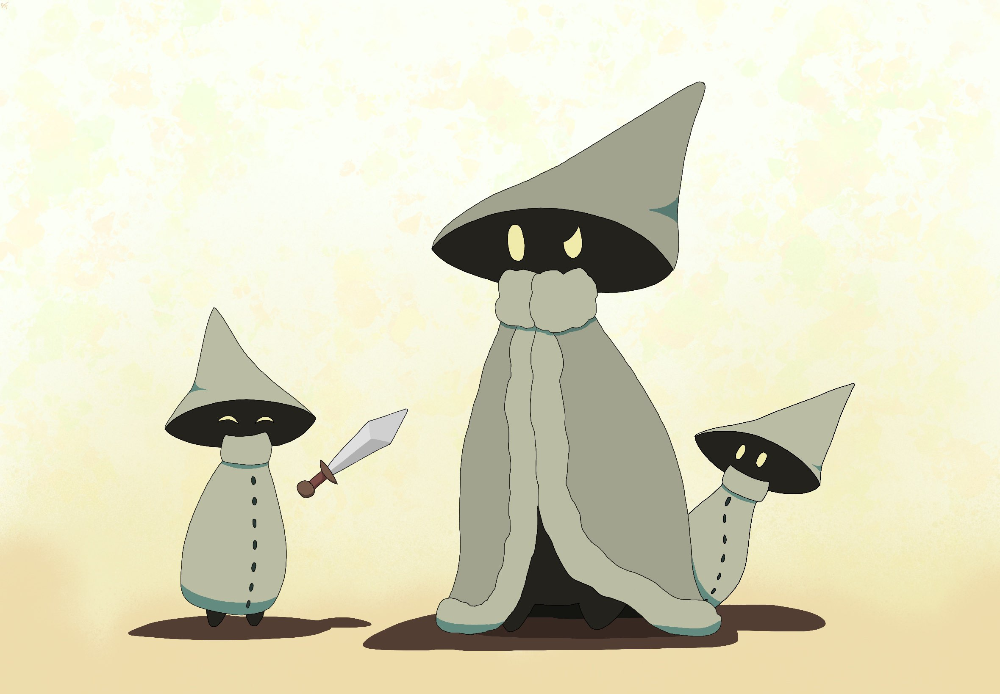
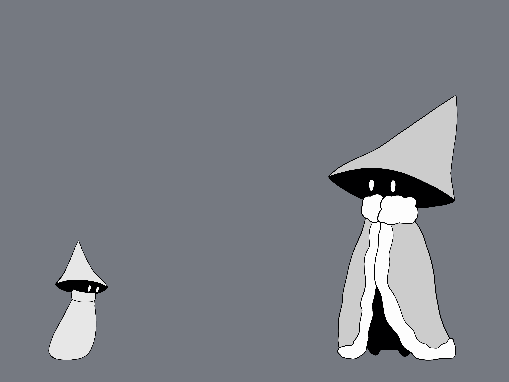
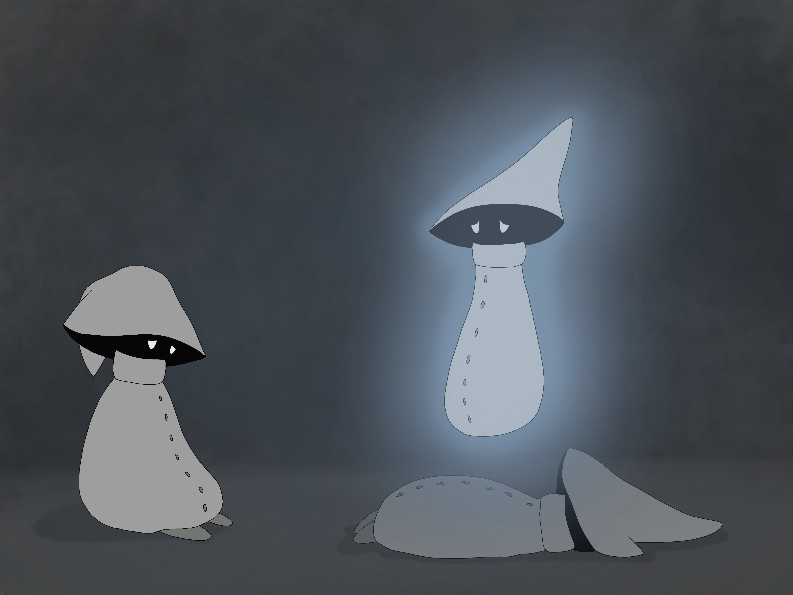
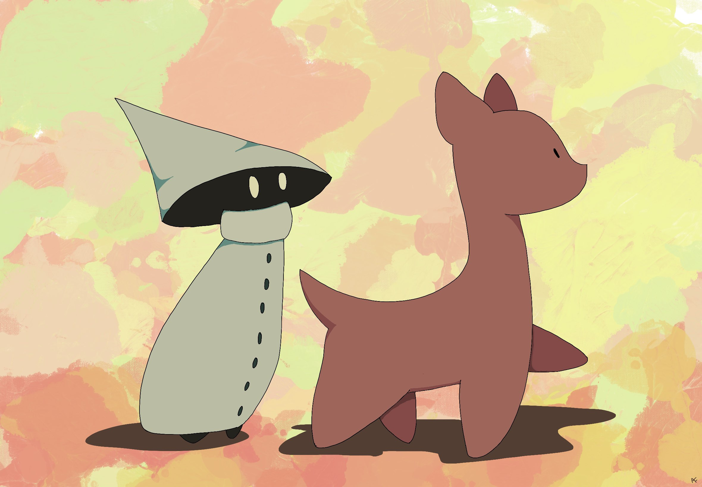
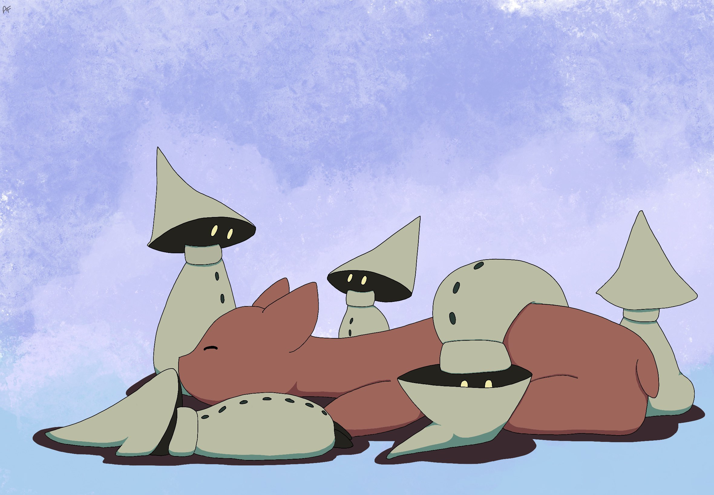
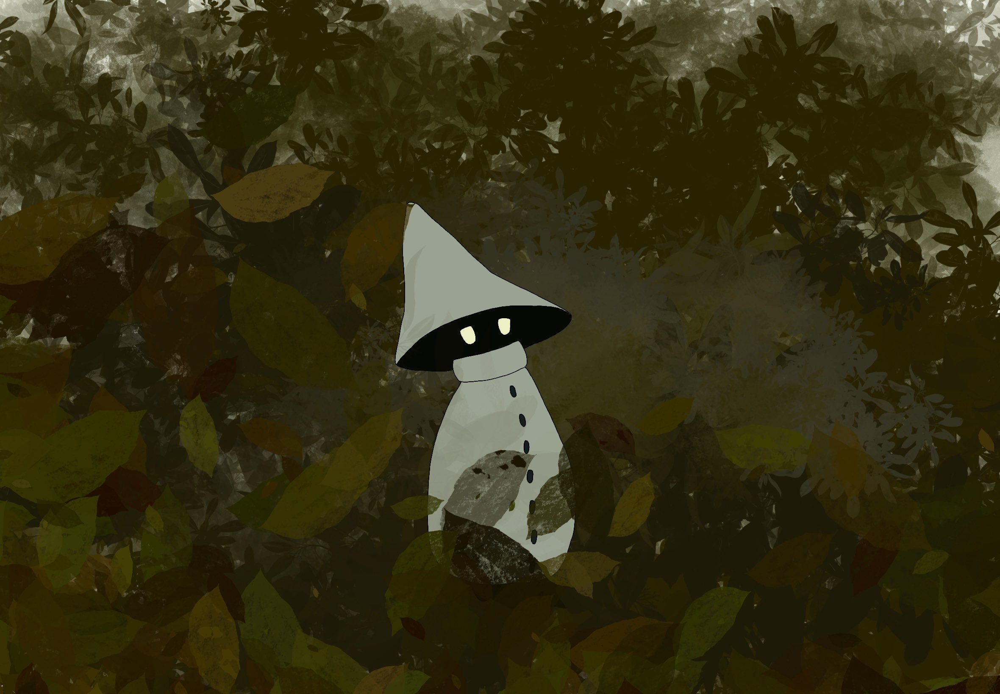

Mysterious Men
Mysterious Men are small, diurnal, magical creatures that spontaneously appear in geographic locations of great joy and safety. They are a social creature, enjoying the company of other members of their tribe and of certain other species. While they do not need to eat or drink, they are still capable of falling ill and dying. It is unknown what they are physically made of or how they execute their magical abilities. It is said that if a person sees a Mysterious Man they will have good luck.
Appearance

Every Mysterious Man wears a large green hat and a long green cloak. The hat is shaped somewhat like a pointed wizard's hat, in a large cone shape that obscures their face such that only a pair of glowing yellow eyes can be seen. Occasionally they may show their extremely pointed teeth, but this rarely occurs as they consider this a display of aggression. It is unknown what their physical form looks like beneath the hat and cloak.

The cloak completely conceals their body, save for small feet which show from the bottom. It has a thick collar and seven dark green buttons along its length. It has no sleeves, since Mysterious Men do not have arms. This is not an issue as it can pick up objects using telekinesis (see Abilities for more information). The cloak serves to regulate the Mysterious Man's body temperature and is never removed, even upon death. It is said that to pry a the clothing off of a Mysterious Man is to cause great misfortune to befall a person's family.
Each Mysterious Man starts out about 4 inches tall, and grows over the next 50 years until it reaches its mature height at about 12 inches tall. If a tribe does not have a leader, referred to as a Mysterious Monarch, the eldest Mysterious Man will then grow to about 16 inches tall, regardless of its age. It will also don a different cloak from the rest, one that has a ruffled hem and collar and that doesn't have any buttons.
Behavior
Temperament
The Mysterious Man is generally very curious and mischievous. It loves to explore new locations, meet new creatures, and learn new things. Mysterious Men can pick up new information very quickly and seem to have near perfect memory. They do not hold grudges however, and are quick to forgive, if not to forget.
Communication
Mysterious Men do not have a spoken language, rather they communicate to each other through telepathic emotions and memories. When communicating with other species, if they happen to know the written language they may choose to write, or the more likely scenario, they may just default to facial expressions.
Social Hierarchy

Mysterious Men have a largely flat social hierarchy, excluding the Mysterious Monarch. Everyone in the tribe works together to watch over young and to teach each other new things. The Mysterious Monarch serves as a protector of the tribe as well as an intermediary between the tribe and unknown/untrusted creatures. In exchange, the tribe places their full trust in the Mysterious Monarch and generally does not question its decisions on where to travel and who to interact with.
Mysterious Men are a trusting and well-intentioned species, and do not typically find the need to throw out members of their tribe. Because of their telepathic links they often preempt any negative thoughts or actions and gently redirect the would-be transgressor. If one member of a tribe has proven itself to typically make poor or dangerous decisions, the Mysterious Monarch will assign a rotating cast of caretakers to make sure they don't get into too much trouble.
If a tribe gets too large, typically more than a dozen members, a portion of the tribe may split off and form a new tribe. This is done voluntarily and none hold grudges against others for choosing or not choosing to leave.
Reproduction
Mysterious Men reproduce asexually. When living in an area with a great abundance of joy, hope, and comfort, a Mysterious Man may spontaneously pop into existence. This is not at all surprising to any Mysterious Men currently in the area and they will welcome the newcomer into their tribe. If there are multiple tribes in a given location, they will not attempt to persuade the newcomer to their tribe. Instead, they allow the newcomer to form a telepathic connection with each Mysterious Monarch, and the newcomer will choose which tribe to join.
Sickness and Death

Mysterious Men do not need to consume food or drink, and they are unaffected by pathogens or extreme temperatures. They will, however, fall ill if exposed to negative emotions for long periods of time. This will cause them to be physically weak and slow, and they will not be able to perform magic properly. Mysterious Men generally do not die from illness, but since they are also susceptible to physical injury, they may be more easily killed by other creatures in their weakened state. This is not generally a concern as Mysterious Men are not hunted, since their corpses disintegrate into dust in the sunlight, leaving only their hat and cloak behind.
When a member of a tribe passes away, the tribe will hold vigil over the member during the night. In the morning, they will watch the body turn to dust at sunrise and then bury the hat and cloak somewhere that the tribe agrees the fallen member would deem beautiful. Sometimes this may take a while to find as the tribe travels through various terrain, but they will never fail to eventually bury the clothing.
Interaction with Other Species
Mysterious Men are on very good terms with both the Moop and the Corfael. Despite the Moop's ambivalence towards members of its own species, they seem to enjoy the company of Mysterious Men. Mysterious Men often take a Moop into their tribe and they will live and travel together for many years. Corfael prefer the company of their own kind, but are more than willing to transport Mysterious Men on their backs when they happen to be travelling in the same direction.



Abilities
Physical Abilities
Mysterious Men are capable of walking over long distances without tiring. They can also sprint up to 30 miles per hour for short distances, but cannot keep it up for more than a few minutes. They can jump upwards up to three times their height, and can clear up to 10 feet in a single leap.
Telepathy
Mysterious Men communicate with each other by telepathically conveying emotions and memories. While it is said that they can communicate with other species in this way as well, there are no known written records of them doing so. It is assumed that establishing a telepathic link opens a Mysterious Man up to psychic attack.
Telekenesis
Mysterious Men do not have arms, but they can still hold and manipulate objects through telekinesis. They are able to manipulate any objects that they can see, although the further away the object the more energy they have to expend in order to do so. Older Mysterious Men have more powerful telekinetic abilities, being able to manipulate more objects simultaneously and from a further distance than younger Mysterious Men.
Teleportation
Mysterious Men can also teleport to locations within their line of sight. This is extremely tiring to them however, so they rarely do this unless startled or in danger. After a teleport it is common for a Mysterious Man to need to rest, or even take a nap.
Distribution and Habitat

Mysterious Men exist in lands of joy and abundance. While there is no limit to how many tribes may exist in a given area, their tendancy to share information with each other means that the emotional and intellectual value of a given space may be quickly exhausted when there are too many tribes in the area, leading some to travel away. They tend to travel towards areas of greater happiness and away from areas of greater suffering, in search of emotional and intellectual stimulation. They do not need to travel, however, and tribes may remain in one place for many years if they find sufficient entertainment.
Mysterious Men enjoy existing in small spaces and do not like being in large, uncovered areas with no hiding locations. As such, they can often be found near bushes and in any hole or container large enough to fit them. At night, a tribe will gather together under the Mysterious Monarch's shelter of choice and take turns keeping watch while the rest sleep.
Gallery